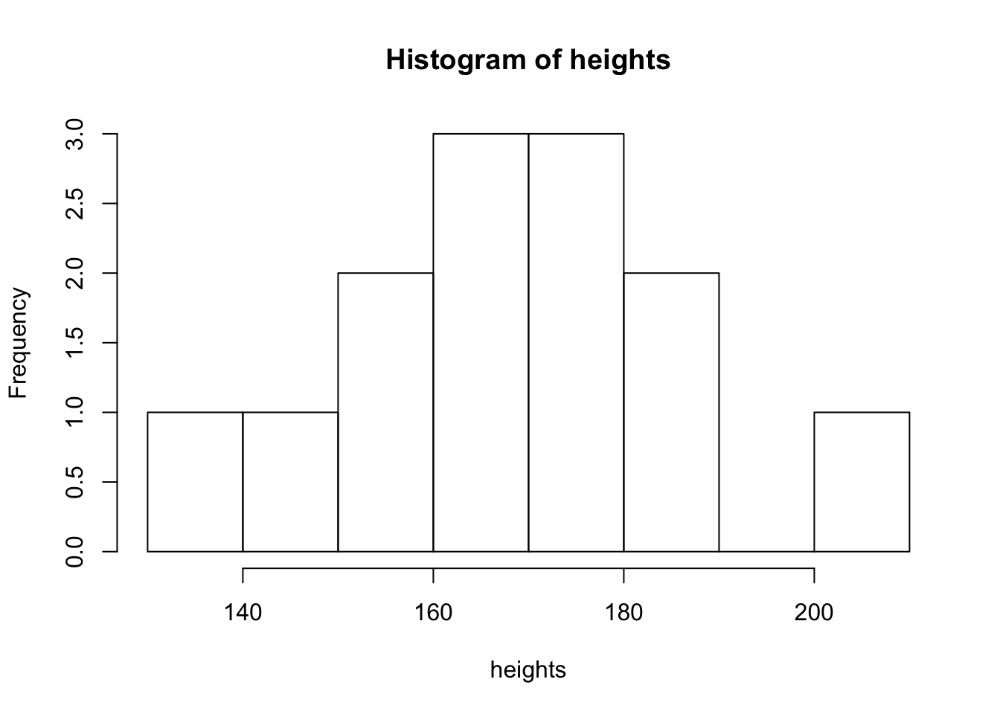
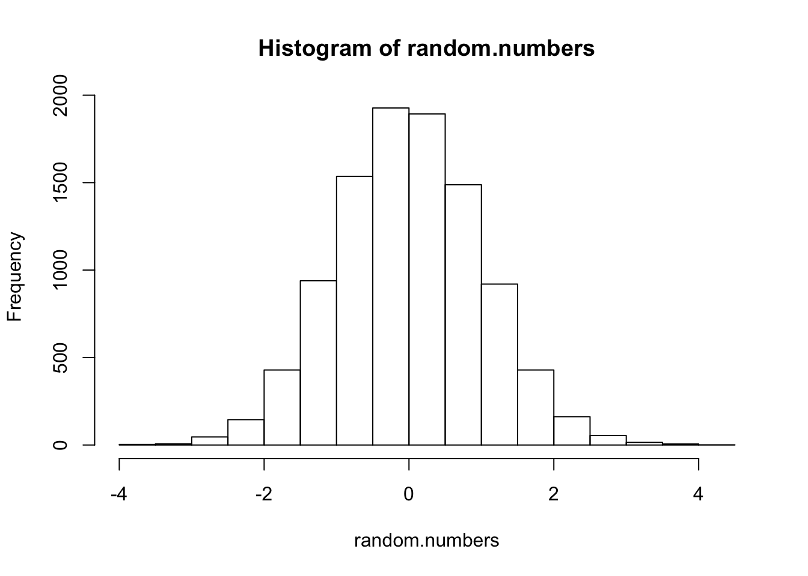

2 Getting started with R and RStudio
2.2 Writing and ‘knitting’ RMarkdown
To include R code within a document we write 3 backticks (```), followed by {r}. We the include our R code, and close the block with 3 more backticks.
```{r}
2 + 2
```
When a document including this chunk is run or ‘knitted’, the final result will include the the line 2+2 followed by the number 4 on the next line. This means we can use RMarkdown to ‘show our workings’: our analysis can be interleaved with narrative text to explain or interpret the calculations.
You can see how this works in practice in the next section.
2.3 RStudio
RStudio is a text editor which has been customised to make working with R easy. It can be installed on your own computer, or you can login to a shared RStudio server3 from a web browser. Either way the interface is largely the same.

The figure above shows the main RStudio interface, comprising:
- The main R-script or RMarkdown editor window
- The R console, into which you can type R commands, and see output from commands run in the script editor.
- The ‘environment’ panel, which lists all the variables you have defined and currently available to use.
- The files and help panel. Within this the files tab enables you to open files stored on the server, or in the current project on your disk.
You can see a short video demonstrating the RStudio interface here:
The video4:
- Shows you how to type commands into the Console and view the results.
- Run a plotting function, and see the result.
- Create RMarkdown file, and ‘Knit’ it to produce a document containing the results of your code and explanatory text.
Once you have watched the video:
- Try creating a new RMarkdown document in RStudio.
- Edit some of the text, and press the Knit button to see the results.
- If you feel brave, edit one of the R blocks and see what happens!
2.4 Your first R commands
You can type R commands directly into the console and see the result there too, but you should make a habit of working in an RMarkdown file. This keeps a record of everything you try, and makes it easy to edit/amend commands which don’t work as you expect.
Now would be a good time to open and RMarkdown document to see how it works. A good place to start would be to open the source to this document. The best way to do this is to download the source code for this project, and then open the file start_here.Rmd.
The source is available here: https://github.com/benwhalley/just-enough-r/archive/master.zip5
To run code in the RStudio interface put your cursor on a line within an R Block (or select the code you want to run), and press Ctrl-Enter. The result will appear below the code block.
The command in the R block below prints (shows on screen) the first few rows of the mtcars dataset, which is built in to R as an example.
Place your cursor somewhere in the line the command is on and run it by typing Ctrl-Enter:
head(mtcars)
## mpg cyl disp hp drat wt qsec vs am gear carb
## Mazda RX4 21.0 6 160 110 3.90 2.620 16.46 0 1 4 4
## Mazda RX4 Wag 21.0 6 160 110 3.90 2.875 17.02 0 1 4 4
## Datsun 710 22.8 4 108 93 3.85 2.320 18.61 1 1 4 1
## Hornet 4 Drive 21.4 6 258 110 3.08 3.215 19.44 1 0 3 1
## Hornet Sportabout 18.7 8 360 175 3.15 3.440 17.02 0 0 3 2
## Valiant 18.1 6 225 105 2.76 3.460 20.22 1 0 3 1If you are reading this from within RStudio, running head(mtcars) will have included an interactive table in the document, which you can use this to view the mtcars dataset. If you are still reading the compiled html or pdf document you will see a table containing the same data, included within the body of the document.
Hopefully at this point it’s obvious that RStudio and RMarkdown give you:
- A nice place to work with R and explore your data
- A nice format to share your workings (e.g. with other researchers or your tutor)
- A mechanism to save reports of your analysis, to share with other people who don’t use RStudio
2.5 Naming things: variable assignment
One of the nice things about R is that we can assign labels to parts of our analysis to keep track of them. Using good, descriptive names is good practice and makes your code easier to read (e.g. when you or others need to revisit in future.
To assign labels to particular values we use the <- symbol. That is, we have a value and use the <- symbol to point to the variable we want to assign it to. For example:
meaning.of.life <- 42This assigns the value 42 to the variable meaning.of.life. This block wouldn’t display anything because assigning a variable doesn’t create any output. To both assign a variable and display it we would type:
meaning.of.life <- 42
meaning.of.life
## [1] 42Or if we want to be explicit:
print(meaning.of.life)
## [1] 42Helpfully, we can also do simple calculations as we assign variables:
one.score <- 20
four.score.years.and.ten <- one.score * 4 + 10
print(four.score.years.and.ten)
## [1] 90As you will see below, we can give anything a label by assigning it to a variable. It doesn’t have to be simple numbers: we can also assign words, graphics and plots, the results of a statistical model, or lists of any of these things.
3 Vectors and lists
When working with data, we often have lists of ‘things’: for example a list of measurements we have made.
- When all the things are of the same ‘type’, then in R this is called a vector.
- When the list contains a mix of different things, then R calls it a list
In general we should avoid mixing up different types of ‘thing’, and so use vectors wherever possible.
3.1 Vectors
We can create a vector of numbers and display it like this:
# this creates a vector of heights, in cm
heights <- c(203, 148, 156, 158, 167,
162, 172, 164, 172, 187,
134, 182, 175)The c() command is shorthand for combine, so the example above combines the individual elements (numbers) into a new vector.
We can create a vector of alphanumeric names just eas easily:
names <- c("Ben", "Joe", "Sue", "Rosa")And we can check the values stored in these variables by printing them, e.g.:
heights
## [1] 203 148 156 158 167 162 172 164 172 187 134 182 175- Try creating your own vector of numbers in a new code block below6 using the
c(...)command. - Then change the name of the variable you assign it to.
3.1.1 Accessing elements within vectors
Once we have created a vector, we often want to access the individual elements again. We do this based on their position.
Let’s say we have created a vector:
my.vector <- c(10, 20, 30, 40)We can display the whole vector by just typing it’s name, as we saw above. But if we want to show only the first element of this vector, we type:
my.vector[1]
## [1] 10Here, the square brackets specify a subset of the vector we want - in this case, just the first element.
3.1.2 Selecting more than one element in a vector
A neat feature of subsetting is that we can grab more than one element at a time.
To do this, we need to tell R the positions of the elements we want, and so we provide a vector of the positions of the elements we want.
It might seem obvious, but the first element has position 1, the second has position 2, and so on. So, if we wanted to extract the 4th and 5th elements from the vector of heights we saw above we would type:
elements.to.grab <- c(4, 5)
heights[elements.to.grab]
## [1] 158 167We can also make a subset of the original vector and assign it to a new variable:
first.two.elements <- heights[c(1, 2)]
first.two.elements
## [1] 203 1483.1.3 Processing vectors
Many of R’s most useful functions process vectors of numbers in some way. For example, if we want to calculate the average of our vector of heights we just type:
mean(heights)
## [1] 167.6923R contains lots of built in functions which we can use to summarise a vector of numbers. For example:
median(heights)
## [1] 167
sd(heights)
## [1] 17.59443
min(heights)
## [1] 134
max(heights)
## [1] 203
range(heights)
## [1] 134 203
IQR(heights)
## [1] 17
length(heights)
## [1] 13All of these functions accept a vector as input, do some proccesing, and then return a single number which gets displayed by RStudio.
But not all functions return a single number in the way that mean did above. Some return a new vector, or some other type of object instead. For example, the quantile function returns the values at the 0, 25th, 50th, 75th and 100th percentiles (by default).
height.quantiles <- quantile(heights)
height.quantiles
## 0% 25% 50% 75% 100%
## 134 158 167 175 203If a function returns a vector, we can use it just like any other vector:
height.quantiles <- quantile(heights)
# grab the third element, which is the median
height.quantiles[3]
## 50%
## 167
# assign the first element to a variable
min.height <- height.quantiles[1]
min.height
## 0%
## 134But other functions process a vector without returning any numbers. For example, the hist function returns a histogram:
hist(heights)
We’ll cover lots more plotting and visualisation later on.
3.1.4 Processing vectors to make new vectors
So far we’ve seen R functions which process a vector of numbers and produce a single number, a new vector of a different length (like quantile or fivenum), or some other object (like hist which makes a plot). However many other functions accept a single input, do something to it, and return a single processed value.
For example, the square root function, sqrt, accepts a single value and returns a single value: running sqrt(10) will return 3.1623.
In R, if a function accepts a single value as input and returns a single value as output (like sqrt(10)), then you can usually give a vector as input too. Some people find this surprising7, but R assumes that if you’re processing a vector of numbers, you want the function applied to each of them in the same way.
This turns out to be very useful. For example, let’s say we want the square root of each of the elements of our height data:
# these are the raw values
heights
## [1] 203 148 156 158 167 162 172 164 172 187 134 182 175
# takes the sqrt of each value and returns a vector of all the square roots
sqrt(heights)
## [1] 14.24781 12.16553 12.49000 12.56981 12.92285 12.72792 13.11488
## [8] 12.80625 13.11488 13.67479 11.57584 13.49074 13.22876This also works with simple arithmetic So, if we wanted to convert all the heights from cm to meters we could just type:
heights / 100
## [1] 2.03 1.48 1.56 1.58 1.67 1.62 1.72 1.64 1.72 1.87 1.34 1.82 1.75This trick also works with other functions like paste, which combines the inputs you send it to produce an alphanumeric string:
paste("Once", "upon", "a", "time")
## [1] "Once upon a time"If we send a vector to paste it assumes we want a vector of results, with each element in the vector pasted next to each other:
bottles <- c(100, 99, 98, "...")
paste(bottles, "green bottles hanging on the wall")
## [1] "100 green bottles hanging on the wall"
## [2] "99 green bottles hanging on the wall"
## [3] "98 green bottles hanging on the wall"
## [4] "... green bottles hanging on the wall"In other programming languages we might have had to write a ‘loop’ to create each line of the song, but R lets us write short statements to summarise what needs to be done; we don’t need to worry worrying about how it gets done.
3.1.5 Making up data (new vectors)
Sometimes you’ll need to create vectors containing regular sequences or randomly selected numbers.
To create regular sequences a convenient shortcut is the ‘colon’ operator. For example, if we type 1:10 then we get a vector of numbers from 1 to 10:
1:10
## [1] 1 2 3 4 5 6 7 8 9 10The seq function allows you to create more specific sequences:
# make a sequence, specifying the interval between them
seq(from=0.1, to=2, by=.1)
## [1] 0.1 0.2 0.3 0.4 0.5 0.6 0.7 0.8 0.9 1.0 1.1 1.2 1.3 1.4 1.5 1.6 1.7
## [18] 1.8 1.9 2.0We can also use random number-generating functions built into R to create vectors:
# 10 uniformly distributed random numbers between 0 and 1
runif(10)
## [1] 0.1859517 0.1403806 0.6693456 0.8472666 0.2309495 0.2300545 0.8666919
## [8] 0.4884143 0.9654400 0.4645153
# 1,000 uniformly distributed random numbers between 1 and 100
my.numbers <- runif(1000, 1, 10)
# 10 random-normal numbers with mean 10 and SD=1
rnorm(10, mean=10)
## [1] 8.859302 9.779185 10.357482 10.937483 8.555067 10.594929 10.930529
## [8] 8.958609 9.831223 8.265265
# 10 random-normal numbers with mean 10 and SD=5
rnorm(10, 10, 5)
## [1] 10.8100825 8.9958930 2.7580386 7.4021015 7.5288401 0.1225604
## [7] 8.4658622 8.2993016 16.7534052 4.5453275We can then use these numbers in our code, for example plotting them:
random.numbers <- rnorm(10000)
hist(random.numbers)
3.1.6 Useful functions to learn now
There are thousands of functions built into R. Below are a few examples which are likely to be useful as you work with your data:
# repeat something N times
rep("Apple pie", 10)
## [1] "Apple pie" "Apple pie" "Apple pie" "Apple pie" "Apple pie"
## [6] "Apple pie" "Apple pie" "Apple pie" "Apple pie" "Apple pie"# repeat a short vector, combining into a single longer vector
rep(c("Custard", "Gravy"), 5)
## [1] "Custard" "Gravy" "Custard" "Gravy" "Custard" "Gravy" "Custard"
## [8] "Gravy" "Custard" "Gravy"# make a sequence and then sort it
countdown <- 100:1
sort(countdown)
## [1] 1 2 3 4 5 6 7 8 9 10 11 12 13 14 15 16 17
## [18] 18 19 20 21 22 23 24 25 26 27 28 29 30 31 32 33 34
## [35] 35 36 37 38 39 40 41 42 43 44 45 46 47 48 49 50 51
## [52] 52 53 54 55 56 57 58 59 60 61 62 63 64 65 66 67 68
## [69] 69 70 71 72 73 74 75 76 77 78 79 80 81 82 83 84 85
## [86] 86 87 88 89 90 91 92 93 94 95 96 97 98 99 100# generate some random data (here, ages in years)
ages <- round(rnorm(10, mean=40, sd=10))
# get the rank order of elements (i.e. what their positions would be if the vector was sorted)
ages
## [1] 52 36 49 48 42 53 35 38 52 28
rank(ages, ties.method="first")
## [1] 8 3 7 6 5 10 2 4 9 1# you could even label the vector of ages if you wanted
labels <- paste("Position:", rank(ages, ties.method="first"))
names(ages) <- labels
ages
## Position: 8 Position: 3 Position: 7 Position: 6 Position: 5
## 52 36 49 48 42
## Position: 10 Position: 2 Position: 4 Position: 9 Position: 1
## 53 35 38 52 28# return the unique values in a vector
unique( rep(1:10, 100) )
## [1] 1 2 3 4 5 6 7 8 9 10Try and experiment with each of these functions. Check the output against what you expected to happen, and make sure you understand what they do.
3.2 Lists
Try running the code below:
confusing.vector <- c(1, 2, 3, "Wibble")
first.element <- confusing.vector[1]
sqrt(first.element)
## Error in sqrt(first.element): non-numeric argument to mathematical functionTake a minute to try and make a guess at what went wrong. Why does R complain that ‘1’ is non-numeric?
When we built the vector we used c to combine the elements 1, 2, 3 and "Wibble". Although our first and second elements are numbers, "Wibble" is not - it’s made up of letters (this is called a character string). Remember that vectors can only contain one type of thing. And so R automatically converts all the elements to the same type, if it can.
Because R can’t reliably convert "Wibble" to a number, everything in the vector was converted to the character type instead. We get an error because R can’t mutiply words together.
If you’re not sure what type of thing your vector contains, you can use the typeof command:
typeof(1:10)
## [1] "integer"
typeof(runif(10))
## [1] "double"
typeof(c(1, 2, "Wibble"))
## [1] "character"Here the meaning of integer should be self explanatory. The vector runif(10) has type double, because it contains ‘double-precision’ floating point numbers. For our purposes you can just think of double as meaning any number with decimal places.
The last vector has the type character because it includes the character string Wibble, and all the other numbers in it were coerced to become character strings too.
If we want to (safely) mix up different types of object without them being converted we need a proper list, rather than a vector. In R we would write:
my.list <- list(2, 2, "Wibble")We can still access elements from lists as we do for vectors, although now we need to use double square brackets, for example:
my.list[[1]]
## [1] 2But now our numbers haven’t been converted to character strings, and we can still multiply them.
my.list[[1]] * my.list[[2]]
## [1] 4Square brackets are ugly and can be confusing though, so we often give names to the elements of our list when we create it:
my.party <- list(number.guests=8,
when="Friday",
drinks = c("Juice", "Beer", "Whisky"))Which means we can then access the elements by name later on. To do this, you write the name of the vector, then a $ sign, and then the name of the element you want to access:
my.party$when
## [1] "Friday"You might have spotted that we included a vector inside the party list. This is not a problem, and we can still access individual elements of this vector too:
my.party$drinks[1]
## [1] "Juice"3.3 Questions on vectors and lists
- Create a vector containing 3 numbers then:
- Access just the last number
- Create a new list containing the first and last number
- Create a list containing, your address and your age in years. Then:
- Multiply your age in years by your flat or house number (by accessing the relevant elements in the list)
- Run the following R code and explain what has happened:
sqrt(1:10) * 10
## [1] 10.00000 14.14214 17.32051 20.00000 22.36068 24.49490 26.45751
## [8] 28.28427 30.00000 31.622783.3.1 Extended questions:
What is the average of the 9 times table, up to and including 9 x 12?
Use the
pasteandc(...)functions to create a vector which contains the sequence “1 elephant”, “2 elephants”, …, “1000 elephants”.
e.g. one run by your university.↩
Note: this isn’t the final version.. it will be more polished!↩
If you wanted, you could view and download the source for just this document here: https://github.com/benwhalley/just-enough-r/blob/master/start_here.Rmd but it will save time to download the whole project now.↩
i.e. edit the RMarkdown document↩
Mostly people who already know other programming languages like C. It’s not that surprising if you read the R code as you would English.↩